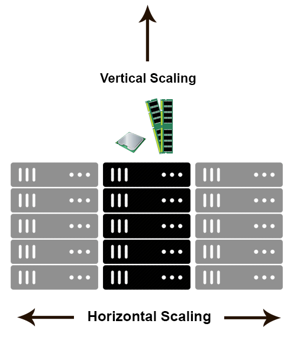
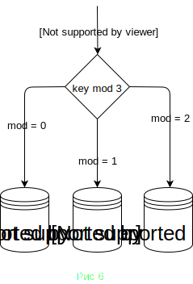
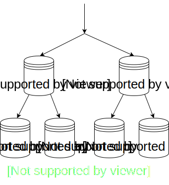
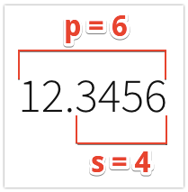

Базы данных, часть I
Баженова Анна
Какие бывают базы данных?
I. Традиционные базы данных
Реляционная модель данных
- данные хранятся в таблицах с колонками определенного типа (схема). Каждая строка - один объект
- можно создавать связи между таблицами
- данные предпочтительно хранить в нормализованном виде
Нормализация
- в каждой таблице хранится минимальное необходимое количество данных
- без дублирования и избыточности
SQL
англ. structured query language — «язык структурированных запросов»
Данные хранятся в консистентном состоянии
Как это можно реализовать?
Транзакции (ACID)
- атомарность (atomicity)
- консистентность (consistency)
- изолированность (isolation)
- надежность (durability)
Преимущества традиционных БД
- гарантируют сохранность и консистентность данных
- позволяют при запросе соединять данные из нескольких таблиц так, как удобно (JOIN)
- проверены временем
- распространенные - есть клиенты под все возможные языки
Примеры
Microsoft SQL Server, PostgreSQL, MySQL, Oracle DBII. NoSQL
NoSQL = Not only SQL
Недостатки традиционной БД
- сложности с горизонтальным масштабированием
Масштабирование
Недостатки традиционной БД
- сложности с горизонтальным масштабированием
- относительно медленные из-за сложной логики обработки параллельных транзакций и проверки консистентности
- реляционная модель данных не всегда удобна
Мы можем отказаться от:
- транзакций (частично или полностью)
- гарантий консистентности
- нормализованных таблиц
Чтобы получить:
- увеличение производительности
- (почти) бесконечное горизонтальное масштабирование
- более подходящую модель данных для задачи
- отсутствие схемы данных
- ...
- документоориентированная БД
- получение данных из связанных коллекций по простому условию
- язык запросов - JS
- сценарий использования близок к традиционным
- транзакции (?)
- не совсем БД, скорее легковесное хранилище
- хранит данные в формате "ключ-значение"
- только примитивные значения: строка, список строк, множество строк и т.д
- язык состоит из примитивных операций GET/SET/ADD...
- быстро выполняет операции
- хранит данные в памяти и ничего не гарантирует
- подходит для хранения данных, которые легко восстановить (кэш)
- модель данных внешне похожа на реляционную (таблицы со схемой)
- язык CQL - почти SQL
- "под капотом" почти "ключ-значение" (запросы, не затрагивающие ключ, работают плохо)
- один запрос = одна таблица
- требуется серьезный подход к проектированию схемы данных
- нет транзакций
- отличное горизонтальное масштабирование и отказоустойчивость
III. NewSQL
SQL + NoSQL
- масштабируемость
- отказоустойчивость
- транзакции
- полноценный SQL + JOIN
Идеальная БД? Да, но...
КРАЙНЕ сложна в реализации из-за распределенных транзакций и не только.


Масштабирование и отказоустойчивость
Репликация
Проблема: в любой момент на сервер может упасть метеорит, мы не должны терять данные в такой ситуации
Решение: сделаем несколько серверов, каждый из которых будет хранить полную копию данных
Репликация = отказоустойчивость
Хотим:
- не потерять данные при поломке одного сервера
- максимально быстро восстанавливать работу
Репликация = масштабирование?
Актуальность данных
2 вида репликации:
- Асинхронная
- Синхронная
Асинхронная
- мастер получает запрос на изменение данных
- сохраняет эти изменения к себе
- отвечает пользователю
- отправляет изменения на реплику (возможно, не сразу)
Асинхронная. Проблемы
- если между пунктами 3 и 4 что-то случится, мы потеряем данные навсегда
- на асинхронной реплике данные могут быть устаревшими
Синхронная
- мастер получает запрос на изменение данных
- отправляет изменения на реплику
- дожидается подтверждения, что данные сохранены
- в случае успеха сохраняет изменения к себе
- отвечает пользователю
Компромисс
Одна синхронная реплика, остальные асинхронные. Если с мастером что-то случается, синхронная реплика заменяет его. Если что-то случается с синхронной репликой, одна из асинхронных занимает ее место.
Шардирование
Проблема: хотим, чтобы один запрос затрагивал как можно меньше шардов
- назначим одну из колонок таблицы ключом
- придумаем отображение ключ ⟶ шард
По диапазонам значений ключа

По диапазонам значений ключа
- можем быстро получать выборку по диапазону значений ключа
- данные могут распределиться неравномерно по шардам
- запросы тоже могут неравномерно распределяться по шардам
По хэшу от значения ключа
По хэшу от значения ключа
- данные распределяются равномерно
- запросы вида key = 7 распределяюся равномерно
- запросы по диапазону (13 < key < 37) приходится выполнять на всех шардах
Шардирование
- лучше всего масштабируюся БД типа "ключ-значение" (Cassandra)
- запросы, не касающиеся ключа, нужно запускать на всех шардах, поэтому они работают медленно
- нет гарантий консистентности, так как шард не знает про транзакции на других шардах
- разработчик должен думать о том, как именно распределять запросы по шардам(*)
Итоги. Репликация
- Отказоустойчивость
- Масштабирование при нагрузке на чтение
- Поддерживается во всех БД и обычно несложно настраивается
Итоги. Шардирование
- Масштабирование при любой нагрузке
- Если поддержка не заложена в архитектуру БД, сложно внедрять
- Много нюансов
Репликация + шардирование
Relax ⏰
- Устанавливаем PostgreSQL
-
Подключаемся:
- psql
- DataGrip
База данных для приложения "Заметки"
Структура базы данных
database
┌{ notebook }
├
│
│
│
│
├
│
│
├
│
│
│
database
CREATE DATABASE notebook;
tables
┌{ notebook }
├─┬{ notes }
│ ├
│ ├
│ ├
│ ├
├─┬{ users }
│ ├
│ ├
├─┬{ categories }
│ ├
│ ├
│ ├
tables
CREATE TABLE notes (
id SERIAL PRIMARY KEY,
name VARCHAR(255) NOT NULL,
text TEXT NOT NULL,
owner_id INTEGER
);
tables
CREATE TABLE users (
id SERIAL PRIMARY KEY,
name VARCHAR(255) NOT NULL
);
CREATE TABLE categories (
id SERIAL PRIMARY KEY,
name VARCHAR(255) NOT NULL,
best_note_id INTEGER
);
tables
CREATE TABLE users (
id SERIAL PRIMARY KEY,
name VARCHAR(255) NOT NULL
);
CREATE TABLE categories (
id SERIAL PRIMARY KEY,
name VARCHAR(255) NOT NULL,
best_note_id INTEGER
);
PRIMARY KEY
- уникальность
- создается индекс
- ограничение NOT NULL
fields
┌{ notebook }
├─┬{ notes }
│ ├──{ id: Integer }
│ ├──{ name: String }
│ ├──{ text: String }
│ ├──{ owner_id: Integer }
├─┬{ users }
│ ├──{ id: Integer }
│ ├──{ name: String }
├─┬{ categories }
│ ├──{ id: Integer }
│ ├──{ name: String }
│ ├──{ best_note_id: Integer }
Типы данных
Строковые
| CHAR(4) | "abc " |
| VARCHAR(4) | "abc" |
| TEXT | "abcdef" |
Числовые. Целые
| SMALLINT | [-215, 215 - 1] |
| INTEGER | [-231, 231 - 1] |
| BIGINT | [-263, 263 - 1] |
Числовые. С плавающей точкой
| REAL | [10-37, 1037] |
| DOUBLE PRECISION | [10-307, 10308] |
Числовые. С произвольной точностью
| NUMERIC [(p[,s])] |
| DECIMAL [(p[,s])] |
1 <= p <= 1000, 0 <= s <= p
Числовые. Последовательные
| SMALLSERIAL | [1, 215 - 1] |
| SERIAL | [1, 231 - 1] |
| BIGSERIAL | [1, 263 - 1] |
Числовые. Последовательные
CREATE TABLE users (
id SERIAL
);
CREATE SEQUENCE users_id_seq;
CREATE TABLE users (
id integer NOT NULL DEFAULT nextval('users_id_seq')
);
ALTER SEQUENCE users_id_seq OWNED BY users.id;
Последовательность
SELECT * FROM users_id_seq;
+------------+-----+-----------+
| last_value | ... | is_called |
+------------+-----+-----------+
| 1 | ... | f |
+------------+-----+-----------+
Последовательность
SELECT * FROM users_id_seq;
+------------+-----+-----------+
| last_value | ... | is_called |
+------------+-----+-----------+
| 1 | ... | f |
+------------+-----+-----------+
Логический тип. BOOLEAN
| TRUE | FALSE |
| 't' | 'f' |
| 'true' | 'false' |
| 'y' | 'n' |
| 'yes' | 'no' |
| 'on' | 'off' |
| '1' | '0' |
Даты
| timestamp [without time zone] | 8 bytes |
| timestamp with time zone | 8 bytes |
| date | 4 bytes |
Даты
| time [without time zone] | 8 bytes |
| time with time zone | 12 bytes |
| interval | 16 bytes |
Даты. Примеры
| timestamp | '2004-10-19 10:23:54' |
| timestamp with time zone | '2004-10-19 10:23:54+02' |
| date | '2018-04-03' |
| time | '04:05:06.789' |
| time with time zone | '04:05:06.789-3' |
| interval | '1 12:59:10' |
Другие
Массивы
- integer[]
- integer[][]
- text[][]
Массивы
'{ значение1 разделитель значение2 разделитель ... }'
integer[][] -> '{{1,2,3},{4,5,6},{7,8,9}}'
text[] -> '{"apple", "orange", "cheese"}'
JSON(B) vs TEXT
- получение конкретного значения
- быстрый поиск
- много функций и операторов
- B → BINARY
JSON(B)
'{ "bar": "baz", "number": 7, "active": false }'
Модификация
CREATE TABLE notes (
id SERIAL PRIMARY KEY,
name VARCHAR(255) NOT NULL,
text VARCHAR(255)
);
ALTER TABLE notes ADD COLUMN owner_id INTEGER;
ALTER TABLE notes DROP COLUMN owner_id;
ALTER TABLE notes ALTER COLUMN text TYPE TEXT;
ALTER TABLE notes ALTER COLUMN text SET NOT NULL;
ALTER TABLE notes RENAME TO personal_notes;
DROP TABLE notes;
Миграции
Механизм модификации структуры и данных в БД. Очень похоже на систему контроля версий. Если что-то пошло не так, то миграции можно откатить.
CRUD
от англ. create, read, update, delete — «создать, прочесть, обновить, удалить»
Create
INSERT INTO notes
(id, name, text)
VALUES
(1, 'Books', 'Books to read');
Read
SELECT id, name AS title, text FROM notes;
+----+-------+---------------+
| id | title | text |
+----+-------+---------------+
| 1 | Books | Books to read |
+----+-------+---------------+
Read
SELECT * FROM notes;
+----+-------+---------------+----------+
| id | name | text | owner_id |
+----+-------+---------------+----------+
| 1 | Books | Books to read | NULL |
+----+-------+---------------+----------+
Auto increment
SELECT * FROM notes_id_seq;
+------------+-----+-----------+
| last_value | ... | is_called |
+------------+-----+-----------+
| 1 | ... | f |
+------------+-----+-----------+
Auto increment
SELECT * FROM notes_id_seq;
+------------+-----+-----------+
| last_value | ... | is_called |
+------------+-----+-----------+
| 1 | ... | f |
+------------+-----+-----------+
Auto increment
INSERT INTO notes (name, text)
VALUES ('Films', 'Films to watch');
ERROR: duplicate key value violates
unique constraint "notes_pkey"
DETAIL: Key (id)=(1) already exists.
Auto increment
SELECT * FROM notes_id_seq;
+------------+-----+-----------+
| last_value | ... | is_called |
+------------+-----+-----------+
| 1 | ... | t |
+------------+-----+-----------+
Auto increment
INSERT INTO notes (name, text)
VALUES ('Films', 'Films to watch');
SELECT * FROM notes;
+----+-------+----------------+----------+
| id | name | text | owner_id |
+----+-------+----------------+----------+
| 1 | Books | Books to read | NULL |
| 2 | Films | Films to watch | NULL |
+----+-------+----------------+----------+
Auto increment
SELECT * FROM notes_id_seq;
+------------+-----+-----------+
| last_value | ... | is_called |
+------------+-----+-----------+
| 2 | ... | t |
+------------+-----+-----------+
Read. Where
SELECT id, name, text FROM notes
WHERE name = 'Films';
+----+-------+----------------+
| id | name | text |
+----+-------+----------------+
| 2 | Films | Films to watch |
+----+-------+----------------+
Read. Where + AS
SELECT id, name AS title, text FROM notes
WHERE title = 'Films';
ERROR: column "title" does not exist
Read. Sort, offset, limit
SELECT name FROM notes;
+----------+
| name |
+----------+
| Books |
| Films |
| Music |
| Rules |
| Markdown |
+----------+
SELECT name FROM notes
ORDER BY name DESC
OFFSET 2
LIMIT 2;
+----------+
| name |
+----------+
| Markdown |
| Films |
+----------+
Read. Count
SELECT count(*) FROM notes;
+-------+
| count |
+-------+
| 5 |
+-------+
Read. Group by
SELECT name, owner_id
FROM notes;
+----------+----------+
| name | owner_id |
+----------+----------+
| Books | 3 |
| Films | 1 |
| Music | 2 |
| Rules | NULL |
| Markdown | 1 |
+----------+----------+
SELECT owner_id, count(*)
FROM notes
GROUP BY owner_id;
+----------+-------+
| owner_id | count |
+----------+-------+
| 1 | 2 |
| 2 | 1 |
| 3 | 1 |
| NULL | 1 |
+----------+-------+
Подзапросы
+----------+----------+
| name | owner_id |
+----------+----------+
| Books | 3 |
| Films | 1 |
| Music | 2 |
| Rules | NULL |
| Markdown | 4 |
+----------+----------+
+------+--------+
| id | name |
+------+--------+
| 1 | Антон |
| 2 | Михаил |
| 3 | Олег |
| 4 | Андрей |
+------+--------+
Подзапросы
SELECT n.name
FROM notes n
WHERE owner_id IN (
SELECT id
FROM users u
WHERE u.name LIKE 'А%'
);
+----------+
| name |
+----------+
| Films |
| Markdown |
+----------+
Read. Массивы
CREATE TABLE example_arrays
(numbers integer[]);
INSERT INTO example_arrays
(numbers)
VALUES ('{1,2,3}'),
('{4,5,6}');
SELECT numbers
FROM example_arrays;
+-----------+
| numbers |
+-----------+
| {1,2,3} |
| {4,5,6} |
+-----------+
Read. Массивы
SELECT numbers[2]
FROM example_arrays;
+-----------+
| numbers |
+-----------+
| 2 |
| 5 |
+-----------+
SELECT numbers[1:2]
FROM example_arrays;
+------------+
| numbers |
+------------+
| { 1, 2 } |
| { 4, 5 } |
+------------+
Read. JSON
CREATE TABLE example_json
(info JSON);
INSERT INTO example_json
(info)
VALUES
('{"bar":"baz","number":7}'),
('{"bar":"foo","some":{"val":13}}');
SELECT info FROM example_json;
+-------------------------------+
| info |
+-------------------------------+
| {"bar":"baz","number":7} |
|{"bar":"foo","some":{"val":13}}|
+-------------------------------+
Read. JSON
SELECT info->>'bar' AS bar
FROM example_json;
+-------+
| bar |
+-------+
| baz |
| foo |
+-------+
SELECT info->'some' AS some
FROM example_json
WHERE info->>'bar' = 'foo';
+--------------+
| some |
+--------------+
| {"value":13} |
+--------------+
Update
UPDATE notes
SET text = 'My favorite books to read', owner_id = 4
WHERE id = 1;
Delete
DELETE FROM notes
WHERE id = 1;
Транзакции
BEGIN;
UPDATE users SET account = account - 10000
WHERE id = 3;
UPDATE users SET account = account + 10000
WHERE id = 4;
{ COMMIT | ROLLBACK };
Расширения для PG
- Полнотекстовый поиск (Full-Text Search, FTS)
- PostGIS (geographic objects)
- Быстрый поиск по элементам массива